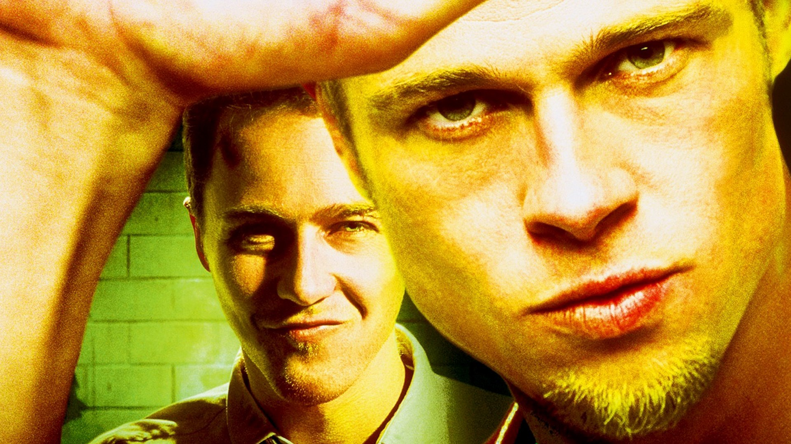
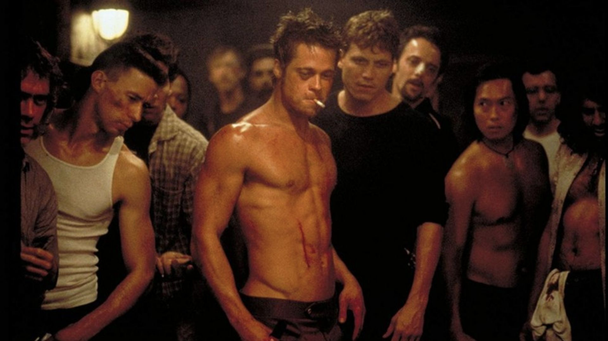
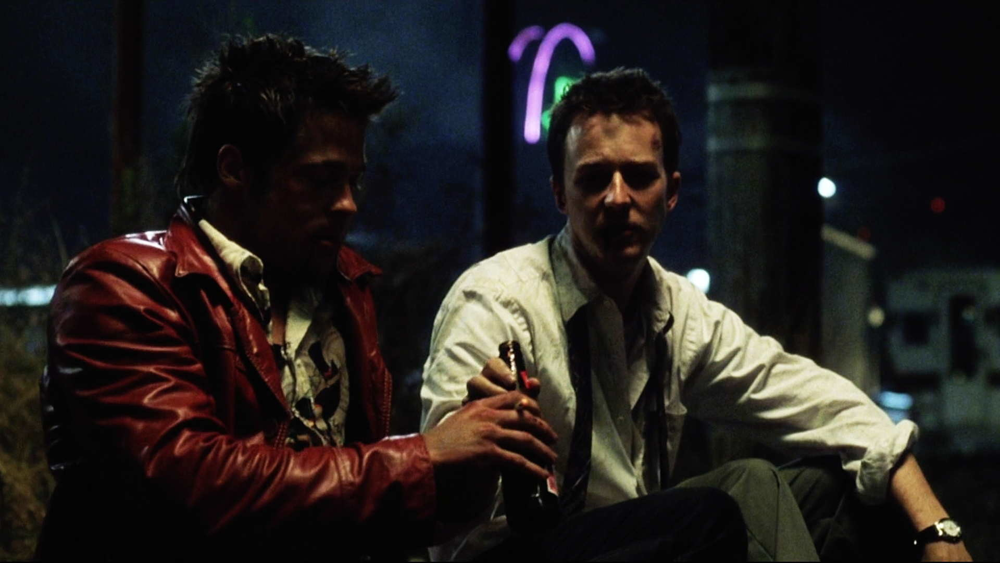
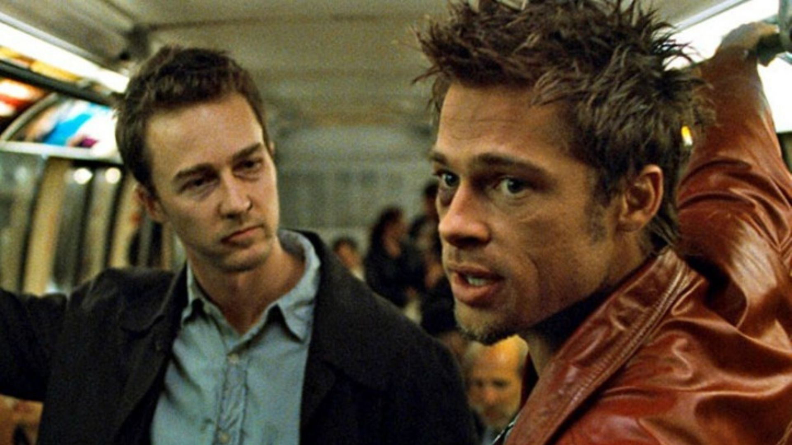
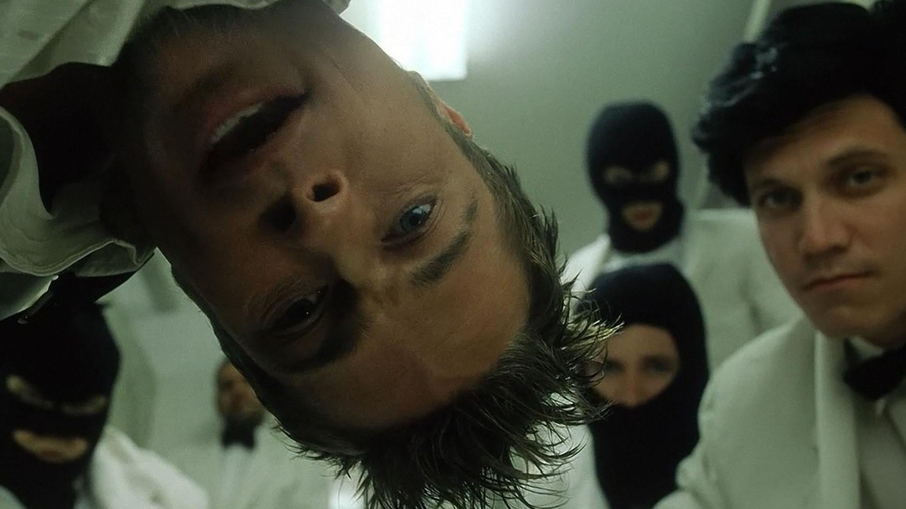
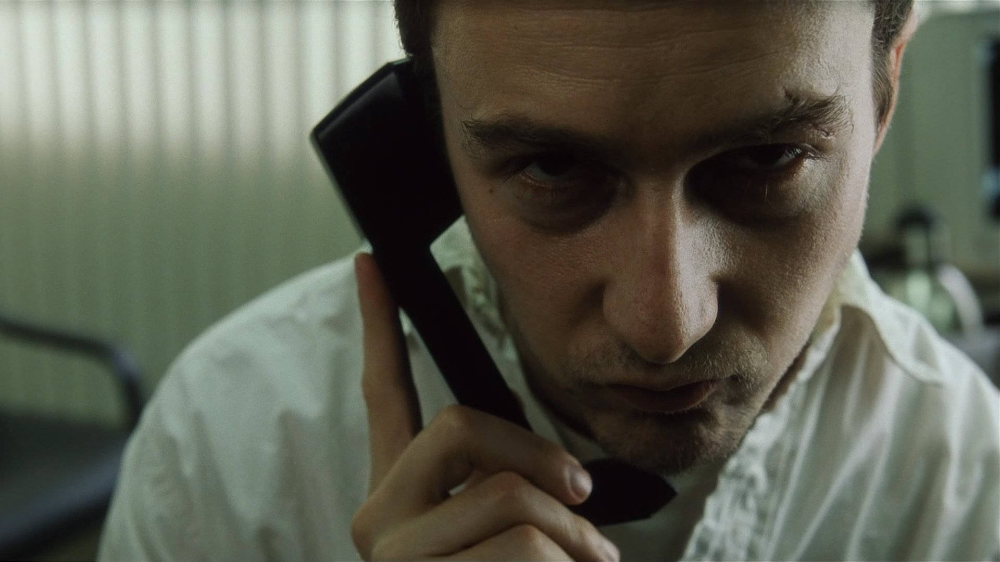
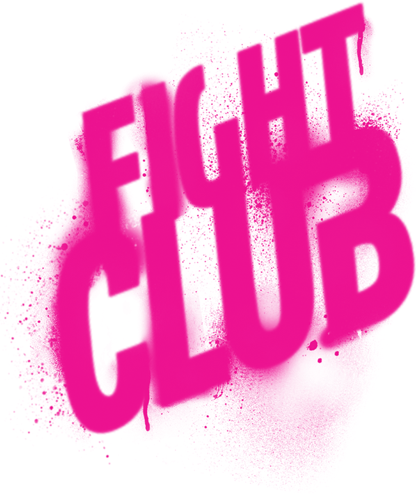

Clube da Luta é um filme de 1999, dirigido por David Fincher. Quando saiu, não teve muito sucesso nas bilheterias, mas acabou atingindo o patamar de filme cult, sendo aclamado pelos críticos e pelo público. Continua sendo um filme bastante popular, talvez porque provoca os espectadores, e conduz a reflexões profundas acerca da nossa sociedade e a da forma como vivemos. Trata-se de uma adaptação para o cinema de um romance de Chuck Palahniuk com o mesmo título, publicado em 1996. fonte: Carolina Marcello